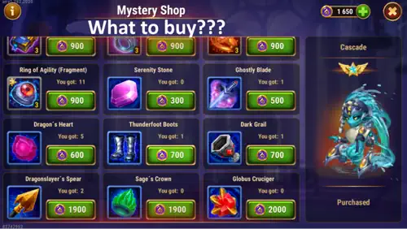
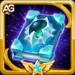

Cascade Way of Mystery Shop Guide for Hero Wars Alliance
- By: Alexandre Domingos. .
Cascade's Way of Mystery Shop is a much better shop than it first appears. Many players will open it, see Cascade Soul Stones, and think the decision is obvious. But in my opinion, the real treasure here is not only Cascade herself. The real treasure is hidden in the artifact books.
During the Way of Mystery event, you complete missions to earn Mystery Coins, Season Points, and Artifact Coins. Spend those Mystery Coins carefully, because this is one of those small event shops where one bad purchase can feel painless today and expensive later.

Best Priority in Cascade's Mystery Shop
My first recommendation is simple: look at the books before you look at the soul stones. For the first time, this shop gives players a chance to buy the unique book artifacts for Somna and Polaris, and those are much harder to replace than normal equipment or random resources.
If you already have Cascade unlocked, or if you can reach your practical star target without spending everything, I would not rush to buy all her soul stones. Buy enough only if your Cascade is very weak or you are trying to reach the four-star relic requirement. After that, I would move straight into the rare books.
- Somna's Grimoire of Fortitude: one of the rarest and most important purchases in this shop.
- Polaris's Code of Decay: another exclusive book artifact that is very difficult to farm normally.
- Cascade's weapon artifact, Claws of the River Fae: a strong buy, but less rare than the Somna and Polaris books.
- Other artifact resources: useful after the premium book and weapon priorities are covered.
- Cascade Soul Stones: buy them if you have almost none or need four stars, but do not overpay past your real goal.
- Equipment: avoid it unless one exact item is blocking an important main-team upgrade.
The Book Artifacts Are the Real Prize
This is the part of the shop that makes me excited. Somna and Polaris are not casual side purchases here. Their books are exclusive, difficult to farm, and tied to heroes that can become very annoying and very strong when built properly.
Even if you do not have Somna or Polaris yet, I still like buying their books. That may sound strange for beginners, but this is how long-term Hero Wars Alliance planning works: when the game gives you access to something rare, you secure it before you waste coins on resources the campaign can give you later.

Top priority if you want rare long-term value.

Excellent investment for control and magic teams.

Very good, but not as rare as the two books.
Should You Buy Cascade Soul Stones?
Yes, but only with a clear reason. Cascade is a good hero to acquire from this event, and beginners who do not have her at all can use this shop to make real progress. The mistake is buying soul stones automatically just because her name is on the event.
For relics, remember the important rule: Cascade needs at least four stars to use her relic. So if you are below that point, buying some soul stones can make sense. Once you reach four stars, I would slow down and consider finishing her evolution later with the Evolution Booster.
That is the balance I like: get Cascade usable, respect the relic requirement, then protect your Mystery Coins for the books and artifacts that are much harder to replace.
Hero Brawls: Easy Coins, Weak Event Feeling
During the event, you can also compete in Hero Brawls to earn extra Mystery Coins. There is a daily battle limit, battles cost Brawl Tokens, and if you win enough fights you can collect a bigger daily prize of 750 Mystery Coins. Across the three days of the event, that is not a huge amount, but for beginners it absolutely matters.
Now, my honest opinion: the Brawl side of this event is weak. On paper, it should be exciting because you can test all heroes at maximum level with golden level 30 relics. In practice, you usually face bad teams, and many players simply do not care enough about the reward to build serious defenses.
That makes the mode easy, but also a little boring. At least there is a practical benefit: if you do not want to waste time, you can skip the battles and let the victory be calculated automatically. Take the coins, move on, and spend your attention where it actually matters.
- Use your Brawl Tokens daily: small rewards become meaningful for newer accounts.
- Aim for the daily 750 Mystery Coins prize: it is not massive, but it helps.
- Skip battles if you want speed: the result is calculated automatically.
- Do not overthink defenses: most players are not treating this brawl like a serious competitive mode.
Why Equipment Is a Bad Purchase Here
Equipment should be avoided in this shop. I know gear can be tempting, especially when one red item is blocking a promotion, but Mystery Coins should not be spent like normal energy. These coins are your chance to buy rare progress.
- Equipment can be farmed with campaign energy.
- Energy farming also gives gold, experience, and event mission progress.
- Somna and Polaris book artifacts are much harder to replace.
- Cascade's weapon artifact gives better long-term account value than most shop gear.
If one equipment piece is an emergency for your main team, I understand the temptation. But as a general rule, I would keep equipment at the bottom of the list.
My Final Recommendation
The best Cascade Mystery Shop strategy is to think like a player who will still care about this account six months from now. If you need Cascade, buy enough soul stones to unlock her or move her toward four stars. But do not let soul stones steal all the coins that should go into rare books.
My personal order is Somna book first, Polaris book second, then Cascade's weapon artifact. After that, other artifact items are fine. Equipment is the purchase I would avoid almost every time.
This event is not perfect. The Brawls are easy and not very exciting, but the shop has real long-term value if you buy the rare things first. That is where the event becomes worth your time.
Useful Links for This Event
If you want to plan the event and your hero progression better, these are the most useful guides to read next:
Video suggestion About Evolution Books
Explore new skills with our featured guides!


Leave Your Opinion!
Did you like our Cascade Way of Mystery Shop Guide? Would you buy the rare books first, or would you push Cascade Soul Stones harder on your account? Share your opinion in the comment section on Alexandre Games. Questions, suggestions, and feedback are always welcome.
Click the button below to get started: